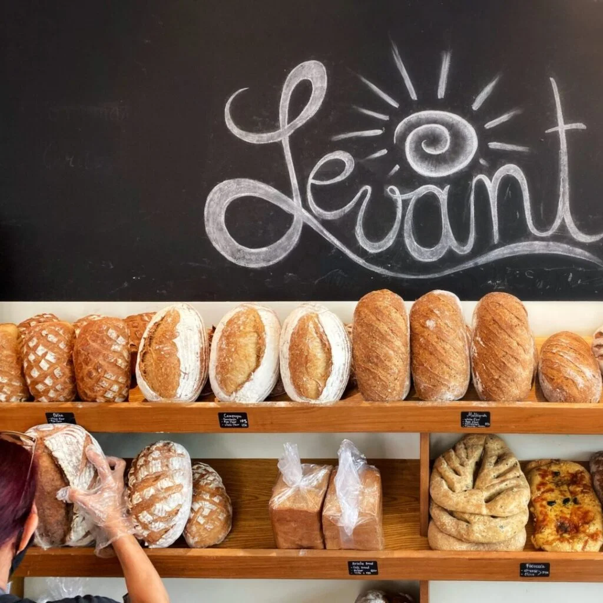
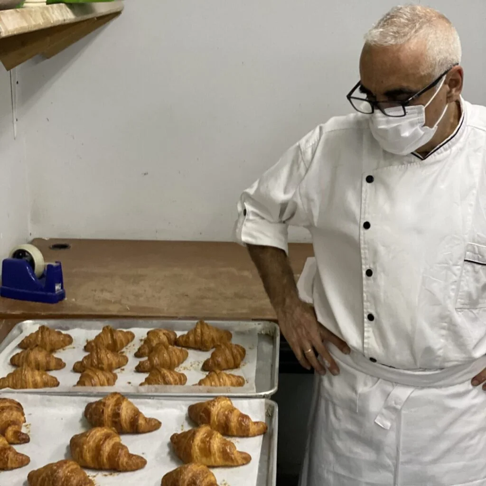
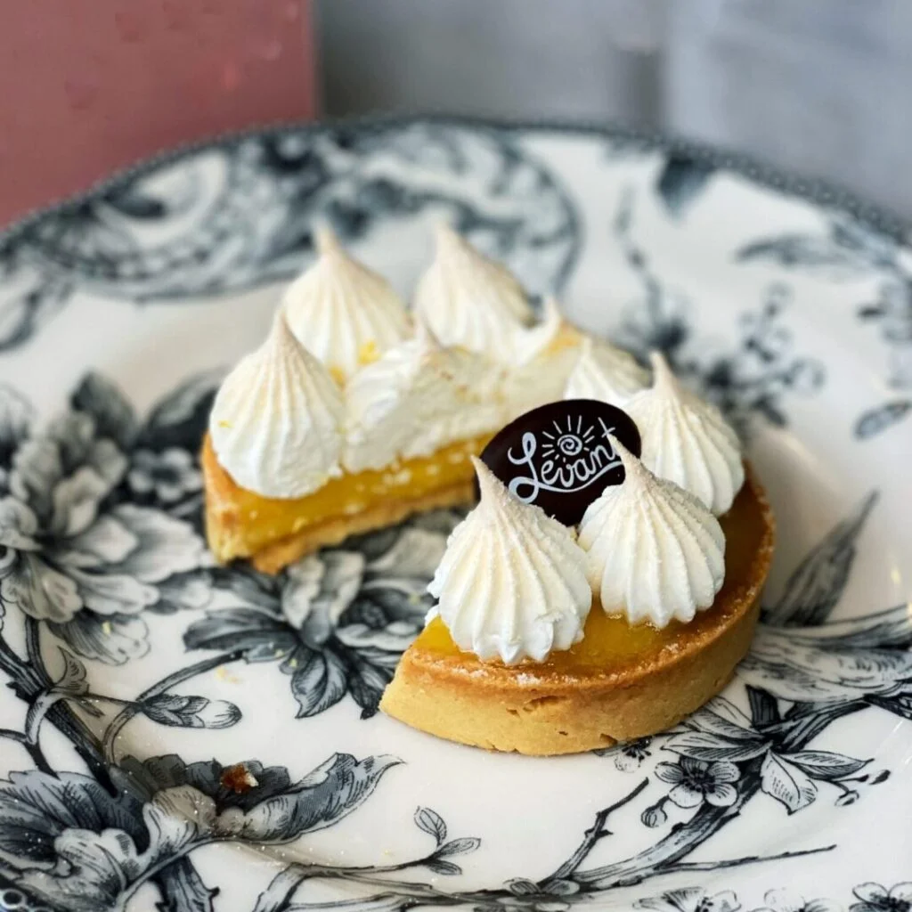
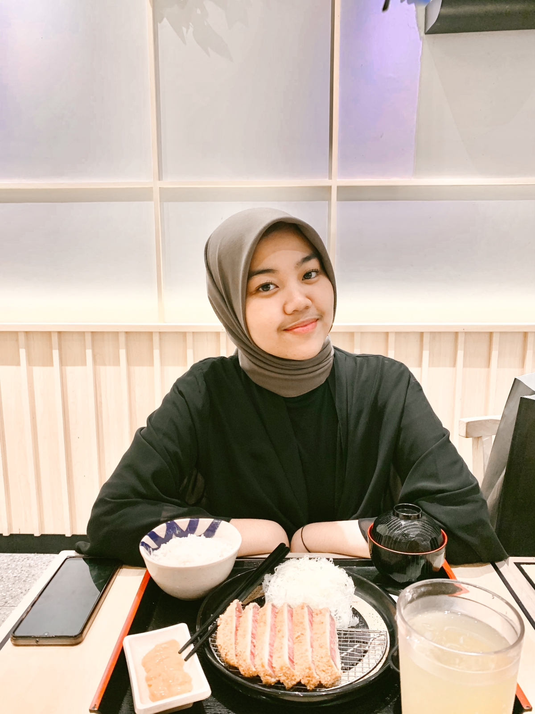

Home | About | Menu | Location | Events | Contact
Our Dhia's Pâtisserie are called ‘artisan’ because we make all our products in-house by hand, using traditional recipes and techniques. At Dhia's we use all natural ingredients, no artificial flavors or preservatives. Our breads are made with pure sourdough, unless otherwise stated, using long fermentation processes, which even in Europe most bakers don’t do anymore. All our Viennoiserie & Pâtisserie products are made with maximum content premium imported Belgian butter. We use real fruits, premium chocolate, fresh dairy cream and imported nuts in order to ensure the authentic experience
|  |  |  |
| Artisan Breads | Viennoiserie | Pâtisserie |
Besides being a bakery, Dhia's also serves
all day breakfast, lunch and dinner in a family friendly and relaxed environment. We serve simple, healthy and comforting food inspired by
French and Mediterranean classics, such as the classic Steak Frites, Niçoise salad, Baguette Sandwiches, and our famous Omelette Mont
Saint-Michel, the viral Brioche French Toast, as well as our refined homemade cakes and pastries. Be sure to try our special Noisette
Macchiato, or our indulgent Affogato! We also recommend our Fruit de Bois smoothy and freshly pressed fruit juices.
Using traditional European methods, our sourdough breads are made with simple ingredients: flour, water, salt and… time and patience!
A long fermentation process (a minimum 24 hours) is what gives our breads their distinct quality and flavor, as well as the use of natural
starters, derived from a ‘Mother-dough’ brought from France that we feed everyday.
The Frenchman still gets up every morning before dawn to bake and supervise the making of Levant’s breads and pastries. Longing to find real bread in Jakarta, he started out with a simple bread maker, which soon led to experimenting with sourdough in his own kitchen. He then invested in a bigger oven and began to make bread for friends and neighbours, and then in an even larger oven and then Dhia was born. Ramons love for authentic artisan bread made according to traditional methods is at the heart of each of his bakeries.
| No. | Menu | Price |
|---|---|---|
| 1. | Breakfast & Brunch | 79k |
| 2. | Baguette Sandwiches | 90k |
| 3. | Croques | 100k |
| 4. | Sourdough Grill Cheese Melt | 130k |
| 5. | Croissant Sandwiches | 115k |
Sumber referensi belajar HTML5 W3Scools
Yang mengerjakan tugas ini :
| Nama Lengkap | : | Yasmine Rizky Ardana |
| NIM | : | 11210251000052 |
|  |